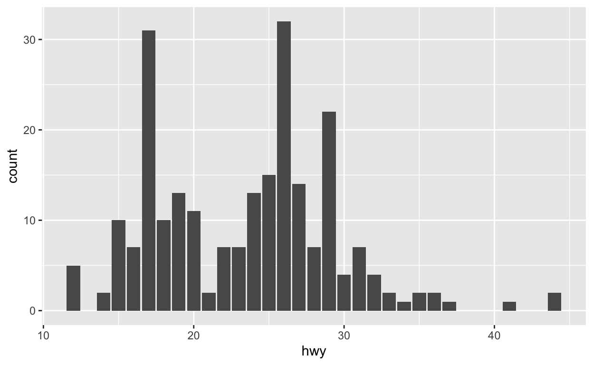
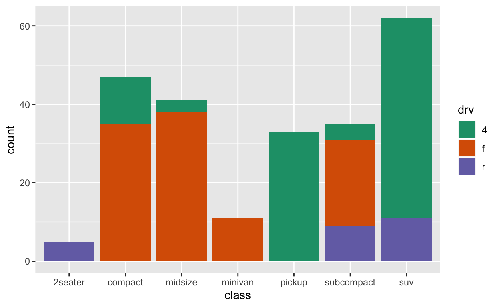
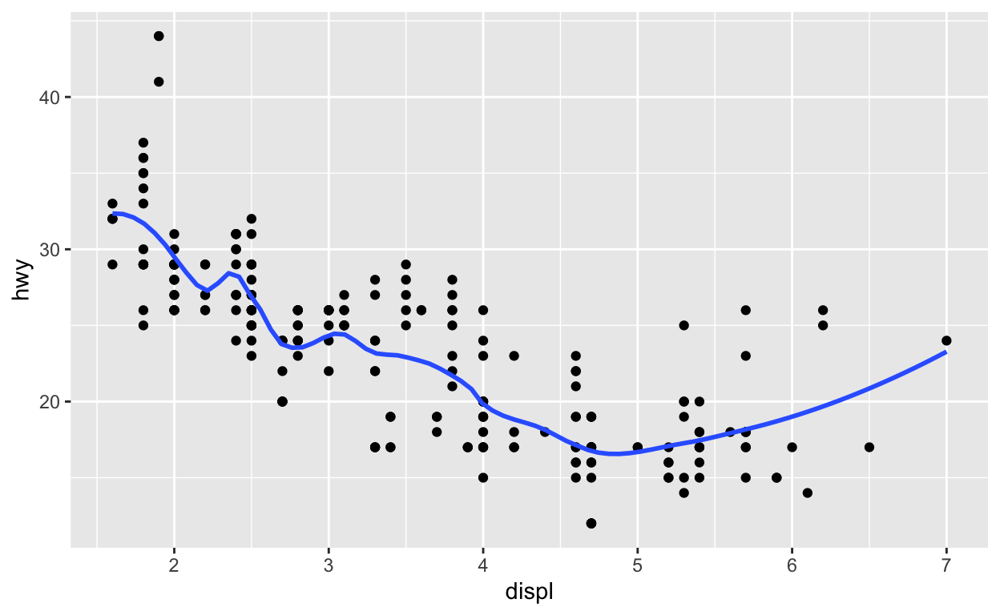
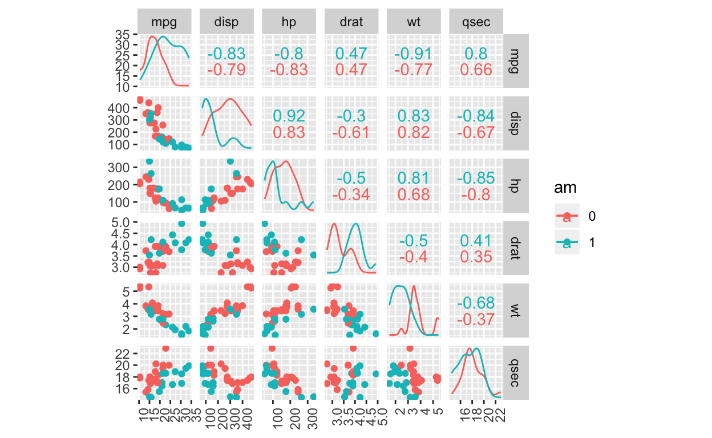

Set up
Please set up your computer with the following instructions:
1. Please Open your RStudio
2. Open the project you created before.
For example, we created a project shiba before. Now, we want to open it.

3. Create a R Markdown file,

Then select HTML output format.

4. Enter the link into your web browser : http://bit.ly/MonashBA_R2
5. Go down to Workshop Contents, then click Data Visualisation (23 August) to open the material of workshop 3.
6. Click chocolate.csv to download the csv file,
Then save it under the data sub directory of your project.

Instructors for Workshop 3
Speaker : Yijia Pan (Jane)
Helpers :
Sayani Gupta
Amy Tran
David Kontrobarsky
Dun Yong Tan
Geethanjali Gangula
James Louis Nguyen
Jiaying Wu (Raymond)
Weihao Li
William Tran
Rowina Nathan
Thi Minh Chau Nguyen
Workshop 3 material prepared by : Yijia Pan, Patricia Menéndez
Introduction to data visualisation
Load the packages
library(tidyverse)
library(learnr)
library(ggplot2)
library(gridExtra)
library(readr)An interesting chocolate data set with diverse ingredients in chocolates. Firstly, library readr and then use read_csv() function to import the chocolate data set.
library(readr)
chocolates <- read_csv("data/chocolates.csv")Different chocolates in rows are our observations and the columns (variables) store information about different aspects of the chocolates.
Our variables include fiber, fat, calories countries and etc…
head(chocolates) Use
glimpse()function to have a look at our data type relative to different variables; The dimension of the data can be seen at the top leftYou can also use
dim()function to know the dimension of the data: 88 observations and 15 variablesUse
names()to see the relevant variablesData type: character, factor, double and logical
glimpse(chocolates) ## Observations: 88
## Variables: 15
## $ Name <chr> "Noir 86% Cacao", "70% Cocoa", "Solid Dark Chocolat…
## $ MFR <chr> "Cote D'Or", "Cote D'Or", "Godiva", "Godiva", "Guyl…
## $ Country <chr> "Belgium", "Belgium", "Belgium", "Belgium", "Belgiu…
## $ Type <fct> Dark, Dark, Dark, Dark, Dark, Dark, Dark, Dark, Dar…
## $ Calories <dbl> 460.0000, 600.0000, 534.8837, 534.8837, 575.7576, 5…
## $ CalFat <dbl> 380.0000, 432.0000, 302.3256, 348.8372, 333.3333, 3…
## $ TotFat_g <dbl> 44.00000, 48.00000, 32.55814, 39.53488, 39.39394, 3…
## $ SatFat_g <dbl> 26.00000, 30.00000, 20.93023, 20.93023, 24.24242, 0…
## $ Chol_mg <dbl> 0.0000000, 10.0000000, 0.0000000, 0.0000000, 0.0000…
## $ Na_mg <dbl> 0.00000, 0.00000, 0.00000, 81.39535, 90.90909, 121.…
## $ Carbs_g <dbl> 28.00000, 42.00000, 60.46512, 41.86047, 48.48485, 5…
## $ Fiber_g <dbl> 10.000000, 10.000000, 9.302326, 13.953488, 12.12121…
## $ Sugars_g <dbl> 10.00000, 28.00000, 46.51163, 27.90698, 33.33333, 1…
## $ Protein_g <dbl> 8.000000, 8.000000, 6.976744, 9.302326, 9.090909, 6…
## $ Contain_Chol <lgl> FALSE, TRUE, FALSE, FALSE, FALSE, FALSE, FALSE, FAL…dim(chocolates)## [1] 88 15names(chocolates)## [1] "Name" "MFR" "Country" "Type"
## [5] "Calories" "CalFat" "TotFat_g" "SatFat_g"
## [9] "Chol_mg" "Na_mg" "Carbs_g" "Fiber_g"
## [13] "Sugars_g" "Protein_g" "Contain_Chol"Make a plot by using chocolate data
Use
ggplot()to visualize the dataChange the title and the name of x axis by using
ggtitle()andxlab()
ggplot(data = chocolates, aes(x = Sugars_g, y = Calories, color = Type)) +
geom_point() +
ggtitle("The relationship between calories and sugars relative to chocolate types") +
xlab("Sugars")Scatter plot
Using function
geom_point()in theggplot2packageUsing mtcars as our data
What is mtcars?
Motor Trend Car Road Tests – the data was extracted from the 1974 Motor Trend US magazine, and comprises fuel consumption and 10 aspects of automobile design and performance for 32 automobiles (1973–74 models).
Use
help()function to find more information- Important variables:
- mpg – Miles/(US) gallon
- cyl – Number of cylinders
- wt – Weight (1000 lbs)
- vs – Engine (0 = V-shaped, 1 = straight)
- am – Transmission (0 = automatic, 1 = manual)
- hp – Gross horsepower
glimpse(mtcars)## Observations: 32
## Variables: 11
## $ mpg <dbl> 21.0, 21.0, 22.8, 21.4, 18.7, 18.1, 14.3, 24.4, 22.8, 19.2,…
## $ cyl <dbl> 6, 6, 4, 6, 8, 6, 8, 4, 4, 6, 6, 8, 8, 8, 8, 8, 8, 4, 4, 4,…
## $ disp <dbl> 160.0, 160.0, 108.0, 258.0, 360.0, 225.0, 360.0, 146.7, 140…
## $ hp <dbl> 110, 110, 93, 110, 175, 105, 245, 62, 95, 123, 123, 180, 18…
## $ drat <dbl> 3.90, 3.90, 3.85, 3.08, 3.15, 2.76, 3.21, 3.69, 3.92, 3.92,…
## $ wt <dbl> 2.620, 2.875, 2.320, 3.215, 3.440, 3.460, 3.570, 3.190, 3.1…
## $ qsec <dbl> 16.46, 17.02, 18.61, 19.44, 17.02, 20.22, 15.84, 20.00, 22.…
## $ vs <dbl> 0, 0, 1, 1, 0, 1, 0, 1, 1, 1, 1, 0, 0, 0, 0, 0, 0, 1, 1, 1,…
## $ am <dbl> 1, 1, 1, 0, 0, 0, 0, 0, 0, 0, 0, 0, 0, 0, 0, 0, 0, 1, 1, 1,…
## $ gear <dbl> 4, 4, 4, 3, 3, 3, 3, 4, 4, 4, 4, 3, 3, 3, 3, 3, 3, 4, 4, 4,…
## $ carb <dbl> 4, 4, 1, 1, 2, 1, 4, 2, 2, 4, 4, 3, 3, 3, 4, 4, 4, 1, 2, 1,…Simple point plot
The graph indicates that the cars with lower weight tend to use less petrol.
ggplot(data = mtcars, aes(x = wt, y = mpg)) +
geom_point() +
xlab("Weight (1000 lbs)") +
ylab("Miles/(US) gallon")Color with discrete variable
Use
factor()to makecylas a factorcoloris in theaes()functionThe function
labs()can be used to easily update the legend title for a given aesthetic (fill, color, size, shape, line type, …)We can also change the text color and position of the legend as well
The graph shows the miles that cars travel per gallon of gasoline depending on the number of the cylinders they have. Heavy cars tend to have more cylinders and travel fewer distances than light cars with the same amount of gasoline.
p1 <- ggplot(data = mtcars, aes(x = wt, y = mpg, color = factor(cyl))) +
geom_point() +
labs(color = "cyl") +
xlab("Weight (1000 lbs)") +
ylab("Miles/(US) gallon")
p2 <- ggplot(data = mtcars, aes(x = wt, y = mpg, color = factor(cyl))) +
geom_point() +
labs(color = "cyl") +
theme(legend.position = "top",
legend.title = element_text(color = "blue", size = 10, face = "bold"),
legend.text = element_text(color = "blue", size = 10, face = "bold")) +
xlab("Weight (1000 lbs)") +
ylab("Miles/(US) gallon")
grid.arrange(p1, p2, nrow = 1)Color with continuous variable
Question: What kind of car tends to have high horsepower?
scale_color_gradient() for sequential gradients between two colors
ggplot(data = mtcars, aes(x = wt, y = mpg, color = hp)) +
geom_point() +
labs(color = "hp") +
scale_color_gradient(low="blue", high="red") +
xlab("Weight (1000 lbs)") +
ylab("Miles/(US) gallon")Selecting point color
ggplot(data = mtcars, aes(x = wt, y = mpg)) +
geom_point(color = "blue") +
xlab("Weight (1000 lbs)") +
ylab("Miles/(US) gallon")Selecting point shapes
ggplot(data = mtcars, aes(x = wt, y = mpg, shape = factor(cyl))) +
geom_point() +
labs(shape = "cyl") +
xlab("Weight (1000 lbs)") +
ylab("Miles/(US) gallon")
Selecting point sizes
ggplot(data = mtcars, aes(x = wt, y = mpg, size = factor(cyl))) +
geom_point() +
labs(size = "cyl") +
xlab("Weight (1000 lbs)") +
ylab("Miles/(US) gallon")Selecting point transparency
ggplot(data = mtcars, aes(x = wt, y = mpg, alpha = factor(cyl))) +
geom_point() +
labs(alpha = "cyl") +
xlab("Weight (1000 lbs)") +
ylab("Miles/(US) gallon")Combining color and shape
What you can get from this graph?
ggplot(data = mtcars, aes(x = wt, y = mpg, shape = factor(am), color = hp)) +
geom_point() +
labs(x = "Weight (1000 lbs)", y = "Miles per gallon", color = "Gross horsepower") +
scale_shape_discrete(name = "Transmission", labels = c("automatic", "manual")) +
scale_color_gradient(low="blue", high="red")Manual cars have high efficiency of using petrol
One manual car has the highest horsepower – think about sports cars
Adding a vertical line
ggplot(data = mtcars, aes(x = wt, y = mpg)) +
geom_point() +
geom_vline(xintercept = 3) +
xlab("Weight (1000 lbs)") +
ylab("Miles/(US) gallon")ggplot(data = mtcars, aes(x = wt, y = mpg)) +
geom_point() +
geom_vline(xintercept = 3, linetype = "dotted",
color = "blue", size = 1.5) +
xlab("Weight (1000 lbs)") +
ylab("Miles/(US) gallon")Line graph
Simple line graph
Using
mpgas our data frame and usehelp()function to get more informationFuel economy data from 1999 and 2008 for 38 popular models of car
Using function
geom_line()
ggplot(data = mpg, aes(x = displ, y = hwy)) +
geom_line() +
xlab("Engine Displacement (Litres)") +
ylab("Highway Miles per Gallon")Faceting
Using facet_wrap()
By using faceting, we can clearly identify the features of cars with different number of cylinders.
ggplot(data = mtcars, aes(x = wt, y = mpg)) +
geom_point() +
facet_wrap(~cyl)Using facet_grid()
Add facets categorized by multiple variables
ggplot(data = mtcars) +
geom_point(mapping = aes(x = wt, y = mpg)) +
facet_grid(cyl ~ am)Box plot, histogram, bar chart
Box plot
Change the background by using
theme_bw()functionAdd color corresponding to
drvf = front-wheel drive, r = rear wheel drive, 4 = 4wd
ggplot(data = mpg, aes(x = drv, y = hwy, fill = drv)) +
geom_boxplot() +
theme_bw()Histogram
Using
binwidth()to adjust the width of each binwe only need y axis in the
aes()
ggplot(data = mpg, aes(hwy)) +
geom_histogram(binwidth = 0.6) Bar chart
ggplot(data = mpg, aes(hwy)) +
geom_bar()
Count of drv in bar chart
ggplot(data = mpg, aes(hwy, fill = drv)) +
geom_bar() +
scale_fill_brewer(palette="Dark2")
Compositional bar charts
When cars are moving using front wheels on highway, they tend to drive more miles per gallon instead of using all 4 wheels or only rear wheels.
ggplot(data = mpg, aes(hwy, fill = drv)) +
geom_bar(position="fill") +
scale_fill_brewer(palette="Dark2")Side-by-side bar charts
When cars are moving on the highway, they are more likely to use 4 wheels or just front wheels.
ggplot(data = mpg, aes(x = hwy, fill = drv)) +
geom_bar(position="dodge") +
scale_fill_brewer(palette="Dark2")What can you get from this complicated graph?
Different types of cars use different wheels to move as they may have different functions
Small cars tend to use petrol more efficiently on highway than large cars
ggplot(data = mpg, aes(x = hwy, fill = drv)) +
geom_bar(position="dodge") +
facet_wrap(~class) +
scale_fill_brewer(palette="Dark2")Advanced plotting
Non-linear regression
Using span to control the “willingness” of the default loess smoother.
The span is the fraction of points used to fit each local regression.
Small numbers make a wigglier curve, larger numbers make a smoother curve.
p3 <- ggplot(data = mpg, aes(x = displ, y = hwy)) +
geom_point() +
geom_smooth()
p4 <- ggplot(data = mpg, aes(x = displ, y = hwy)) +
geom_point() +
geom_smooth(span = 0.3)
grid.arrange(p3, p4, nrow = 1)Set se = FALSE to get rid of standard error
ggplot(data = mpg, aes(x = displ, y = hwy)) +
geom_point() +
geom_smooth(span = 0.3, se = FALSE)
Scatter plot Matrices
All variables are supposed to be numerical
Rotate the text of x axis in order to be seen clearly
library(GGally)
mtcars %>%
mutate(am = factor(am)) %>%
ggscatmat(data=.,color = "am", columns=c(1,3,4,5,6,7)) +
theme(axis.text.x = element_text(angle = 90, hjust = 1))
Resources
Online Books
Cheat Sheets
Blogs
Community
Feedback
Please provide your feedback for workshop 3, your feedback will help us improve the future experience of workshops.
3 minutes feedback : https://docs.google.com/forms/d/e/1FAIpQLScNvF28ZglZt6EHdjKvr8wyJK9tVep85kl1rtGZPb4SydnLHg/viewform
Once you completed the feedback, you can collect a hexagonal sticker from the helpers in next Workshop.